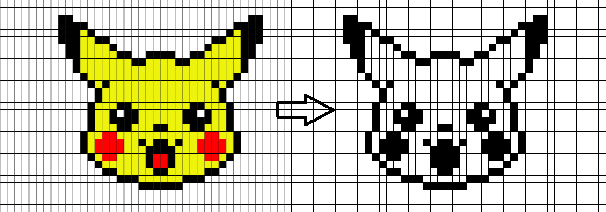

Binarization. Yes or No. Black or White. 1 or 0. In a binary world, the options are one or the other. There is no other choice.
As we learn previously, the below image has three color elements: Red, Green and Blue. The average of these three values are resulted with a grayscale image. This gives a broad idea of light intensity. Based on light intensity, we can decide on binarization threshold.
Move the slider to change the binarization threshold. Observe when the yellow turns to white and red turns to white pixels.
What were the two thresholds?